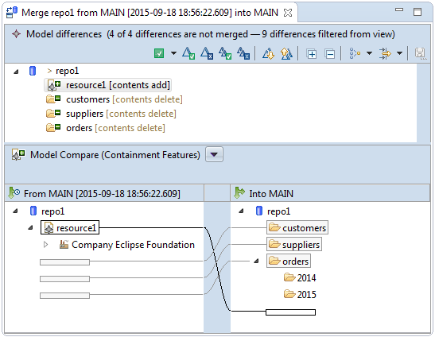

Collaborating in Real-Time


Collaborating in Real-Time |
|
CDO supports real-time collaboration on models by transferring the changes that one user
commits to the repository to all
other users connected to the same repository and transparently weaving those changes into their model copies.
With CDO the local model copies (in particular with online transactional checkouts) do not need to be updated manually; they are automatically updated (almost) at the time they are changed by other users.
As real-time collaboration relies on committing a transaction it applies only to
online transactional checkouts and the editors
opened on online transactional models. Saving a model editor commits the underlying transaction.
The data integrity of the models and model elements in a repository is guaranteed by write locks
that are acquired per model element. Read locks and write options,
as well as durable locks are supported by the core-level APIs
but not by the CDO Explorer's user interface.
Table of Contents
By default model elements are locked optimistically, that is, the CDO server implicitly acquires and releases locks while executing a commit operation. These implicit locks are not visible to the committing user or any other user of the same repository.
Optimistic locking provides for the highest possible degree of concurrency but it also comes with a non-zero risk of commit conflicts that are only detected when a commit operation is executed by the CDO server and, as a consequence, rejected. Because of Early Conflict Detection the risk of conflicts that are detected that late in the commit process is generally much lower than, for example, in pure database-based applications.
To completely eliminate the risk of commit conflicts Pessimistic Locking must be used.
As the local model copies of a user are automatically updated (almost) at the time they are changed by other users
CDO can anticipate the conflict potential of the local changes early, in particular before an attempt to commit these changes is even made.
The CDO Model Editor decorates such conflicting model elements with a red-colored font,
indicating that the underlying transaction can not be successfully committed anymore.

Automatic Conflict Resolution and Interactive Conflict Resolution, if enabled, may have an impact on what exact types of changes are considered a conflict.
Each time a local transaction is notified of a remote change by the CDO server and local conflicts are detected (see Early Conflict Detection) these conflicts are categorized as being either trivial conflicts or non-trivial conflicts. Trivial conflicts are:
Trivial conflicts are merged automatically into the local transaction, i.e., no user interaction is involved.
When non-trivial changes are detected, i.e., changes to the same single-valued EStructuralFeature feature on both sides (local and remote) of the same model element, automatic conflict resolution is suspended for all model elements until the next local commit operation. During this period all incoming change notifications are accumulated and remembered for possible Interactive Conflict Resolution at commit time.
If Automatic Conflict Resolution has detected non-trivial conflicts in a local transaction and
an attempt is made to commit this transaction the following dialog pops up:
The dialog shows an overview of how many local model elements are added, changed, and removed. One of several conflict resolution actions has to be selected by the user:

Saving this merge editor commits the merged local transaction. Note that new non-trivial conflicts may have been detected in the meantime, in which case interactive conflict resolution is triggered again.
rolled back and the local model copies
are automatically updated to their latest remote versions. As a result all local changes will be lost and eventually need to be
re-applied and committed again.
Sometimes it seems not desirable to risk commit conflicts as they can occur with Optimistic Locking. In these cases CDO supports the acquisition of explicit locks on selected models (see Tree Locking) and model elements.
Pessimistic locking support consists of:
Whether custom user interface components, such as model editors or views, support local actions and/or lock state visualization depends on the implementation of those components. The CDO Model Editor's context menu offers lock actions for model elements that are not locked by anyone and unlock actions for model elements that are locked by the current user. Both the CDO Model Editor and the Project Explorer Integration support lock state visualization by decorating model elements that are locked by the current user with a green lock icon (indicating that they can be modified) and model elements that are locked by other users with a red lock icon (indicating that they can not be modified):
Note that a CDO editor generally operates in the context of a separate transaction, in particular not in the context of the
read-only view of the associated checkout, which explains why, in the screen shot above, both checkouts show the
locked model elements with a red lock icon decoration. In other words, while a model element is locked in a CDO editor it can not be
modified directly in the associated checkout via the Project Explorer.
Sometimes it is desirable to lock not just a single model element but to atomically lock the tree of model elements rooted at the selected model element. The CDO Model Editor's context menu offers a Lock Tree action for model elements that are not locked by anyone and an Unlock Tree action for model elements that are locked by the current user.
With automatic locking turned on for a particular transaction write locks are automatically acquired
for model elements at the time these model elements are modified the first time.
Automatic locking is not yet supported for checkouts.
With automatic committing turned on for a particular transaction that transaction is automatically committed
each time a model element is modified. This can be very useful when the primary purpose of a repository is to support real-time
collaboration between a number of users.
On the other hand with automatic committing multiple logically related changes are no longer isolated in single composed commits. This can be especially undesirable in repositories with auditing or branching support because the databases of these types of repositories monotonously grow with the number of commits.
Automatic committing is not yet supported for checkouts.